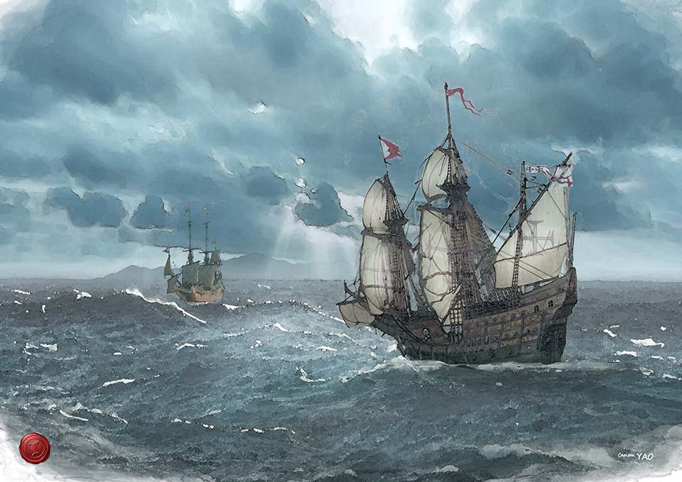

網路鍊結
即使本館已經有大量的圖文內容，但在公眾網路上仍然有許多與和平島與大基隆歷史相關的網站可以延伸閱覽，若從本碼頭鍊結出去， 就像搭船到各地去遊學取經，讓知識更加豐富，這是我們設立鍊結區的目的。
請注意: 本館提供鍊結服務是為了節省各位搜尋的時間，不表示本館背書各網站的內容正確性或支持其立場，亦不代表本館與各網站之間有任何合作關係， 在離開本館鏈結到該網站後即與本館無涉。

展示艦船
歐美日與海洋有關的博物館大多館前有碼頭，停泊多艘紀念艦船做為展示之用。台灣這種例子很少，唯一的台南安平德陽艦營運與艦況都不佳，考據又諸多缺失， 實在無法做為成功案例。我們期待未來聖薩爾瓦多城能夠原址原樣復建，原來該城的前方就有泊地，加上台船若遷移留下的船塢，就能停泊多艘展示船艦， 並且就近能夠維修。
我們期待能創立台灣第一個博物館紀念艦實船展示的成功案例，目標是全世界尚在服役最老的潛艦「海獅」或「海豹」。 在這個理想尚未實現之前，我們將透過虛擬的手段讓大家登船神遊。
航線與港口
和平島的聖薩爾瓦多城在西班牙人時代就有來自馬尼拉、長崎、澳門、福州、甚至阿卡孛果(美洲墨西哥西岸)的船隻停泊， 到了輪船時代更成為東西方航線的必經之地，與全球各大港市都有連結，譬如歐美人家中的茶葉許多都是從基隆出口的。
今天基隆想要發展郵輪產業，這些都是很重要的文化財，能夠做為故事行銷的基礎。我們希望藉由本平台累積內容， 提供材料來吸引全球的遊客，告訴他們基隆在幾百年前就與他的祖先、他的國家發生關係。